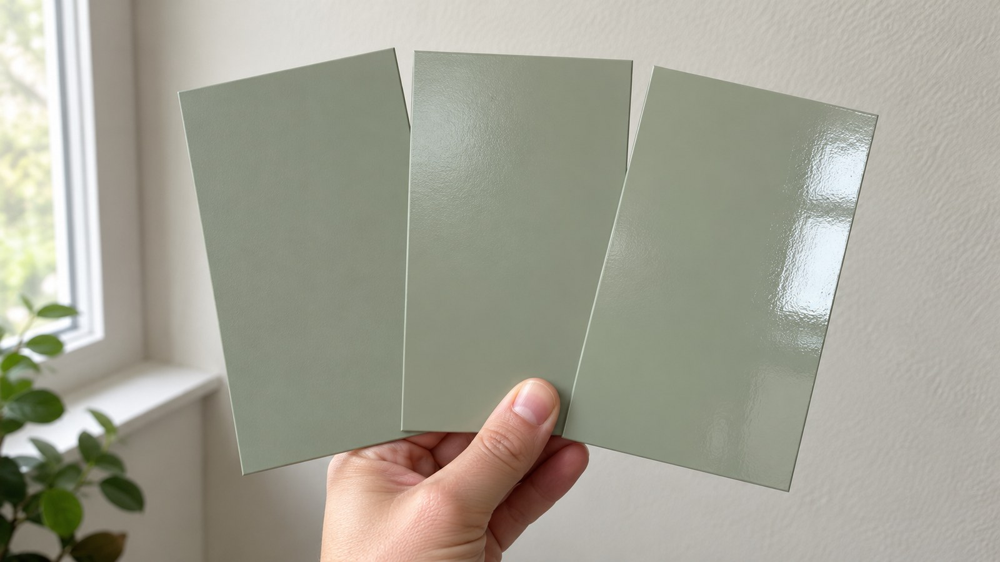
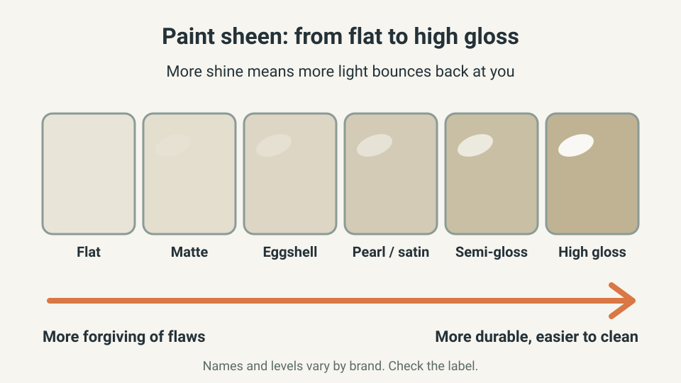
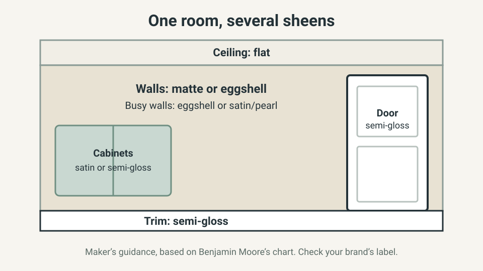
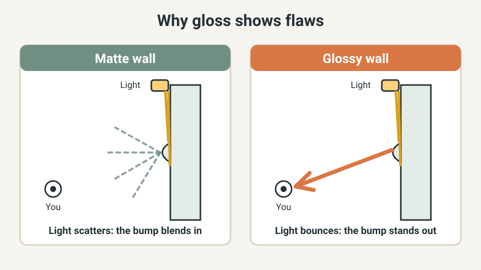

HOME DESIGN · PAINT FINISHES
How to Choose a Paint Finish: Which Sheen for Walls, Trim and Bathrooms
Pick the wrong finish and walls show every roller mark, or scuff at the first wipe. Here is how to choose a sheen for each surface before you buy, using the paint makers’ own guidance.

The quick answer
- Ceilings: flat. Walls in a bedroom or dining room: matte or eggshell. Hallways and other walls that get touched: eggshell, or pearl/satin if you accept that it shows flaws more.
- Trim, doors and cabinets: semi-gloss, or satin/pearl for a softer look.
- Bathrooms and other damp rooms: pick a paint line made for humidity first, then its sheen.
- The more shine, the easier to clean and the less forgiving of a bumpy wall. Decide which problem you have.
- Sheen names differ by brand, so read the can and test a patch before you buy gallons.
This guide is built from Benjamin Moore’s sheen guide and the Home Depot finish guide, listed at the end. It is general home information, not a product recommendation. Follow the label on your paint.
What sheen changes
Sheen, or finish, is how much light bounces off the dry paint. Benjamin Moore lists seven common finishes, from no shine to high shine: flat, matte, eggshell, pearl, satin, semi-gloss and high gloss. Its chart runs from “more forgiving of imperfections” on the low-sheen end to “more durable” on the high-sheen end.

That is the whole decision in one line: low sheen hides a rough wall but marks more easily, and high sheen cleans well but shows every bump. Everything below is that trade-off applied to one surface at a time.
Match the sheen to the surface
Paint makers publish a “common uses” chart. This table follows Benjamin Moore’s interior chart. It is the maker’s guidance for its own range, not a rule, and other brands label sheens a little differently.

| Surface | Common sheen | Why |
|---|---|---|
| Ceilings | Flat | Hides ceiling flaws; rarely touched |
| Walls in very low-traffic spaces | Flat | Most forgiving; marks more easily |
| Living rooms, dining rooms, bedrooms | Matte or eggshell | Soft look with some washability |
| High-traffic walls | Eggshell, or pearl/satin | More durable; pearl shows lap marks more |
| Trim and doors | Semi-gloss (also satin/pearl or gloss) | Defines edges; stands up to hands |
| Cabinets | Satin or semi-gloss | Smooth, tough surface |
| Architectural details | Semi-gloss or high gloss | Needs a smooth, well-prepared surface |
Home Depot’s guide gives the same rule of thumb: a lower sheen such as eggshell or satin on walls, and higher-gloss paint for accents.
Where flat and matte let you down
Flat paint is the most forgiving, but Benjamin Moore warns that stains are harder to remove from low-sheen paint, and that constant rubbing or cleaning can burnish it, leaving shiny patches. That is why flat suits ceilings and very low-traffic walls, not a hallway where bags and shoulders brush past every day. Benjamin Moore says its matte finish takes frequent washing better than flat, even in hallways and family rooms, so matte is a safer low-sheen choice where you want a soft look.
Where glossy paint lets you down
The same shine that makes a surface easy to wipe also shows what is under it. Benjamin Moore says gloss reflects light and can accentuate blemishes, so avoid it on areas that are not completely smooth, and that high gloss needs careful preparation. Pearl is more likely to show lap marks and other painting flaws. Home Depot adds that eggshell is considered harder to touch up than satin. If you are painting an older wall with patches, a lower sheen will look better than a glossier one.
Bathrooms, kitchens and laundry rooms
Damp rooms ask for two decisions, not one. First choose a paint line made for humidity: Benjamin Moore offers a matte paint designed for durability and mildew resistance in high-humidity rooms, and a pearl paint that offers mildew resistance. Then choose the sheen you like for that line. Paint does not cure a damp room, so if the mirror fogs for a long time or walls stay wet, fix the airflow first. Our guides on bathroom condensation and choosing an exhaust fan cover that.
Test the sheen on your own wall
Light changes how a finish looks, so judge it on your wall, not on a shop display. Paint a patch about the size of a sheet of paper, let it dry, and look at it in the morning, in the evening with your lamps on, and at a shallow angle. Evening lighting in particular shows up flaws that daylight hides.

Quick win (10 minutes)
- Pick the one wall that worries you most: the hallway, the kid’s room or the wall by the door.
- Hold a phone light almost flat against it and note the bumps, patches and old roller marks.
- Check the label of the paint already on it for the sheen name.
- Decide: rough wall and low traffic means matte or eggshell; smooth wall that gets touched means eggshell or satin.
- Buy a sample size in that sheen and paint the test patch.
What not to buy yet
- Gallons in two or three sheens “to compare”. Buy one sample first.
- A glossy sheen for walls just because it cleans easily, if the wall is not smooth.
- New paint for a damp wall before the moisture problem is fixed.
Common mistakes
- Choosing from a tiny chip. A large dry patch tells you far more.
- Using the same sheen on trim and walls and then wondering why the trim does not stand out.
- Matching names across brands. Benjamin Moore itself notes that eggshell and low lustre are comparable but not exact, so check the label of the brand you buy.
- Putting flat paint where hands and bags touch the wall.
Frequently asked questions
What is the most forgiving paint finish?
Flat and matte. Benjamin Moore says flat paint hides flaws and gives a uniform surface, and matte is nearly as shine-free. The trade-off is that stains are harder to remove from low-sheen paint.
Which paint finish is easiest to clean?
Higher sheens are generally the easier ones to wipe. Benjamin Moore describes eggshell as easy to clean, pearl and satin as high in durability, and high gloss as stain-resistant. Check the maker’s washability claim for the exact product, because the sheen name is only part of it.
Can I use different sheens in the same room?
Yes, and it is normal. Benjamin Moore’s own chart suggests flat for ceilings, matte or eggshell for walls, and semi-gloss or gloss for trim and doors.
Eggshell or satin for a living room?
Benjamin Moore lists eggshell for living rooms and for high-traffic walls, and pearl or satin for high-traffic walls too. Choose eggshell for a softer look, and satin or pearl where hands and scuffs reach the wall, but paint it carefully: pearl shows lap marks and other flaws more.
What finish should I use in a bathroom?
Choose a product made for humid rooms, then pick its sheen. Benjamin Moore offers a matte paint designed for high-humidity rooms and a pearl paint that offers mildew resistance. Fix the ventilation too, because paint cannot cure a damp room.
Keep going
- How to make a room feel calmer without buying everything new
- Better evening home lighting without overcomplicating it
- How to reduce bathroom condensation
- How to choose a bathroom exhaust fan
Sources and further reading
Last reviewed: October 27, 2026. Sheen names and levels differ by brand and country, so read the can for the product you buy.